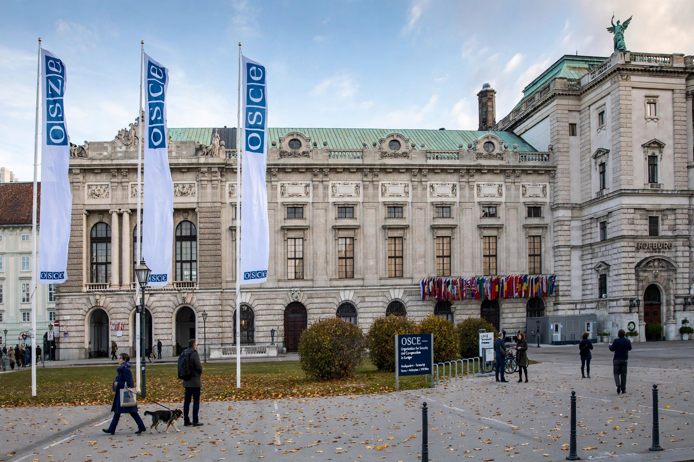

| Abbreviation | OSCE |
|---|---|
| Formation | 1973 as CSCE; renamed 1995 |
| Headquarters | Vienna, Austria |
| Membership | 57 participating States |
The Organization for Security and Co-operation in Europe (OSCE) is the world's largest regional security-oriented intergovernmental organization, with 57 participating States in North America, Europe and Asia. Its mandate includes arms control, human rights, freedom of the press, and free and fair elections.

It originated as the Conference on Security and Co-operation in Europe (CSCE), which produced the Helsinki Final Act of 1975. After the Cold War it was institutionalized and renamed OSCE effective 1 January 1995.
Decision-making bodies include summits, the Ministerial Council and the Permanent Council in Vienna. Autonomous institutions include the Office for Democratic Institutions and Human Rights (ODIHR), the High Commissioner on National Minorities, and the Representative on Freedom of the Media. The OSCE runs field operations, election observation missions, and conflict-prevention work, notably in the Balkans, Eastern Europe, the Caucasus and Central Asia. Its Special Monitoring Mission to Ukraine operated from 2014 until 2022.
Decisions are taken by consensus and are politically, not legally, binding. Its comprehensive concept of security links politico-military, economic-environmental and human dimensions.